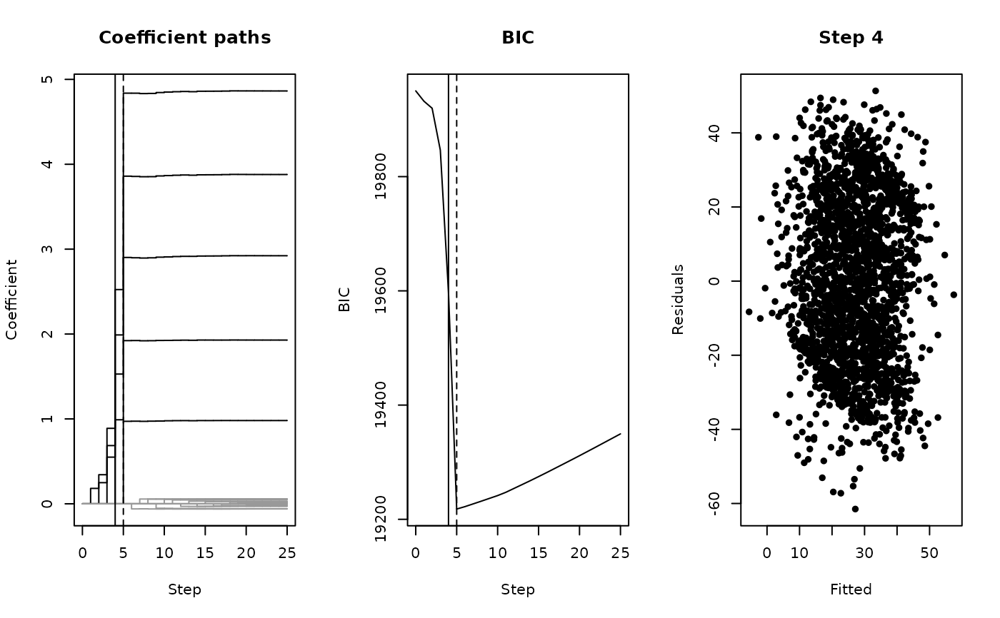

This function runs forward selection on a dataset made by surreal() and
keeps the model that stood at every step, so the selection can be plotted
or played back. It starts with no predictors and adds, at each step, the
one that explains most of what is left.
Usage
surreal_path(data, criterion = c("BIC", "AIC"))Arguments
- data
A data frame from
surreal(),surreal_text(),surreal_image()orsurreal_decoys(), with a response namedy.- criterion
Character. The score that picks the best step,
"BIC"(default) or"AIC". Lower is better.
Value
An object of class surreal_path, a list with:
- steps
A data frame with a row for each step, from 0 (no predictors) to the number of predictors: the predictor that
entered, thecriterionof the model and itsr_squared.- coefficients
A matrix with a row of coefficients for each step. A predictor that has not entered yet has a coefficient of 0.
- fitted, residuals
Matrices with a column for each step.
- criterion
The criterion that was used.
- best
The step with the lowest criterion.
- decoys
The names of the decoy predictors, when
datacame fromsurreal_decoys().
The rows of coefficients and the columns of fitted and residuals are
named by step, so path$residuals[, "5"] holds the residuals at step 5.
Details
On data straight from surreal() every predictor is real, so the
criterion falls at each step and the hidden image appears at the last one.
With decoys from surreal_decoys() the criterion is lowest at the model
of the real predictors, where the image is clear, and rises as decoys
enter and blur it.
The criterion is computed as BIC() and
AIC() compute it for a linear model.
See also
surreal_decoys() to add the decoys that make this a real search.
Examples
set.seed(114)
hidden <- surreal(r_logo_image_data)
decoyed <- surreal_decoys(hidden, n = 20)
path <- surreal_path(decoyed)
path
#> <surreal_path>
#> Forward selection over 25 predictors by BIC
#> BIC is lowest at step 5
#> In the model at that step: X.11, X.12, X.5, X.18, X.13
# The coefficient paths, the criterion and the residuals at the best step
plot(path)
 # One step too early
plot(path, step = path$best - 1)
# One step too early
plot(path, step = path$best - 1)
